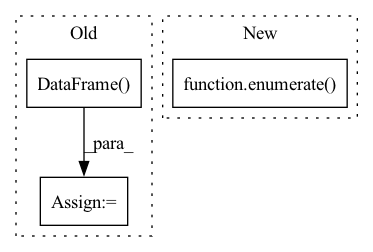

Pattern ID :17337
Before Change
else:
luad_list = glob.glob("datasets"+os.sep+"wsi-tcga-lung"+os.sep+"LUAD"+os.sep+"*.csv")
lusc_list = glob.glob("datasets"+os.sep+"wsi-tcga-lung"+os.sep+"LUSC"+os.sep+"*.csv")
luad_df = pd.DataFrame( luad_list)
luad_df["label"] = 0
luad_df.to_csv("datasets/wsi-tcga-lung/LUAD.csv", index=False)
lusc_df = pd.DataFrame(lusc_list)
lusc_df["label"] = 1
lusc_df.to_csv("datasets/wsi-tcga-lung/LUSC.csv", index=False)
bags_path = luad_df.append(lusc_df, ignore_index=True)
bags_path = shuffle(bags_path)
bags_path.to_csv("datasets/wsi-tcga-lung/TCGA.csv", index=False)
bags_csv = "datasets/wsi-tcga-lung/TCGA.csv"After Change
print("Best model saved at: " + save_name + " Best thresholds: LUAD %.4f, LUSC %.4f" % (thresholds_optimal[0], thresholds_optimal[1]))
else:
print("Best model saved at: " + save_name)
print("\n Best thresholds: ".join("class {}: {}".format(*k) for k in enumerate( aucs) ))
if __name__ == "__main__":In pattern: SUPERPATTERN
Frequency: 3
Non-data size: 3
Instances Fragment ID: 57529725
Project Name: binli123/dsmil-wsi
Commit Name: 9679d9909a89006555a4d371274255f65ef695ac
Time: 2021-05-20
Author: bli346@wisc.edu
File Name: train_tcga.py
M Class Name: AnonimousClass
N Class Name: AnonimousClass
M Method Name: main(0)
N Method Name: main(0)
M Parent Class:
N Parent Class:
M File Name: train_tcga.py
N File Name: train_tcga.py
M Start Line: 129
M End Line: 165
N Start Line: 111
N End Line: 169
Before Change
preds = np.vstack(
adata.obs[obs_key].astype(str).apply(lambda x: pop_dict.get(x, np.nan))
)
adata.obs[obs_keys] = pd.DataFrame( preds, dtype="category", index=adata.obs.index)
def _get_pop_index(pop: str, marker_pop_matrix: pd.DataFrame):
for i in range(marker_pop_matrix.index.nlevels - 1, -1, -1):After Change
level_names = mpm.index.names[1:]
obs_keys = [f"{obs_key}_{name}" for name in level_names]
for i, new_obs_key in enumerate( obs_keys) :
pop_dict = {pop: levels_pops[i] for pop, *levels_pops in mpm.index}
adata.obs[new_obs_key] = adata.obs[obs_key].map(pop_dict).astype("category")
Fragment ID: 57529724
Project Name: mics-lab/scyan
Commit Name: 4106d6b20e3e8f401b10a13e080f0a3602404b57
Time: 2022-12-08
Author: quentin.blampey@student.ecp.fr
File Name: scyan/utils.py
M Class Name: AnonimousClass
N Class Name: AnonimousClass
M Method Name: _add_level_predictions(2)
N Method Name: _add_level_predictions(2)
M Parent Class:
N Parent Class:
M File Name: scyan/utils.py
N File Name: scyan/utils.py
M Start Line: 103
M End Line: 112
N Start Line: 108
N End Line: 117
Before Change
// 保存id label
k_fold_result = np.mean(k_fold_result, axis=0)
result = np.argmax(k_fold_result, axis=-1)
df = pd.DataFrame( {"node_idx": test_nid, "label": result})
nodes_path = os.path.join("../final_dataset", "IDandLabels.csv")
nodes_df = pd.read_csv(nodes_path, dtype={"Label": str})
df["label"] = df["label"].apply(id2name)After Change
k_fold_result = []
for index, checkpoint_path in enumerate( model_cfg["CHECKPOINT_LIST"]) :
checkpoint_path = os.path.join(model_cfg["CHECKPOINT_BASE"], checkpoint_path)
print("Test checkpoint", checkpoint_path)
Fragment ID: 57529732
Project Name: langgege-cqu/maxp_dgl
Commit Name: de8c9a09e551d9dfc26acbffbad6d98c21da5b63
Time: 2021-12-21
Author: lpancake@foxmail.com
File Name: maxp_model_zlm/final_model/unimp/test_yaml_k_fold.py
M Class Name: AnonimousClass
N Class Name: AnonimousClass
M Method Name: test(4)
N Method Name: test(4)
M Parent Class:
N Parent Class:
M File Name: maxp_model_zlm/final_model/unimp/test_yaml_k_fold.py
N File Name: maxp_model_zlm/final_model/unimp/test_yaml_k_fold.py
M Start Line: 125
M End Line: 155
N Start Line: 125
N End Line: 139